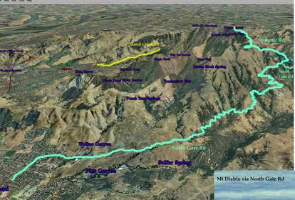

Week 7: Mount Diablo (N)
14 Nov 2009
|
2009 Low-Key Hillclimbs Week 7: Mount Diablo (N) 14 Nov 2009 |
|  |
| Aerial photo of Mount Diablo (N), courtesy of Stanford Cycling |
Diablo is one of the big three of Bay area climbs (with Mt Hamilton and Mt Tamalpais). Revisiting our start from 2006, we begin at the North Gate road before turning left onto Summit Road for the familar run to those final, steep run to the summit.
For many, this is a justifiable favorite. The continuity of the climb, the will-testing finish, and the absolutely spectacular views from the summit make this a climb to be revisited again and again. It's time for Low-Key to return.
One thing which differentiates Diablo from the other climbs in this year's series is that Diablo is not on public roads, but is instead on state park roads. Thus we are here only with the permission of the park, and such we need to be on our best park behavior. Due to this, we'll be riding Diablo as a time trial, to avoid groups which can present a larger impediment to other traffic. The race of truth...
Our insurance demands it: helmets are required. Sorry kids, no exceptions!
USA Cycling rules do not allow ear plugs. We don't think it's a good idea either. So for safety sake, please leave both ears open during all Low-Key events!
Trailers pulling boom boxes are fine, however.
Registration will be at Arbolado Park in Walnut Creek! There are rest rooms available at the park. Here's a Google Map.
After registrations, riders will ride to the north gate of Mount Diablo State Park on, well, North Gate Road. Here's a street view of the gate. There start times will be recorded for each rider as they are send on their merry way up the hill.
We have one left turn on the course. Here's the street view. Please yield to right-of-way car traffic. This is Low-Key!
Finally, when you get here, you're almost at the top! Please bear right: we'll be waiting for you there!
Ahhh!!! Glorious victory!
This week is public-transit friendly! Take BART! My favorite way to Diablo is the Pleasant Hill BART station. Here's directions for riding from Pleasant Hill BART to the registration area. Pleasant Hill's a bit of a shorter and nicer ride to the start than from Walnut Creek BART.
| stats | N Gate Rd: 6.25 mi, 1910 ft (5.8%) Summit Rd: 4.5 mi, 1690 ft (6.9%) total : 10.75 miles, 3600 ft (6.3%) |
| format | time trial |
| time | reg 9:15 - 10:00 start 10:10am |
| coordinator | |
| aerial view | Stanford Cycling (lower) Stanford Cycling (upper) |
| route profile | Motionbased profile |
| weather | Weather Underground Weather Bonk summit (current) |
| registration form |
PDF release form |
| entry fee | $10 voluntary donation free for juniors 2 free for volunteers free for coordinators |

{kind=link}
{kind=link}
{kind=link}